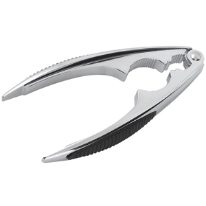

Живые крабы
198 отзывов
Употребление раков в пищу является профилактикой огромного количества заболеваний. С их помощью можно предотвратить тромбозы, снизить риск различных заболеваний сердца.
Как готовить краба.
Классический рецепт
-
1
Вскипятите воду из расчета: не менее 1 литра на одного краба.
-
2
Добавьте в кипящую воду 2 столовые ложки морской соли. Можно также добавить 1 лавровый лист, 3-5 горошин черного перца, перемолотый зубчик чеснока, лимонный сок.
-
3
Опустите краба в воду.
-
4
Дождитесь, когда вода снова закипит. После этого уменьшите огонь до медленного.
-
5
Если краб весит около 1 килограмма, то на его приготовление уйдет 15-20 минут. Если – около 500 граммов, то понадобится 8-10 минут. О степени готовности краба вам просигнализирует его панцирь, он станет ярко-оранжевым.
-
6
Аккуратно вытащите готового краба из кастрюли и на 20 секунд опустите в ледяную воду.
-
Все. Теперь его можно подавать к столу.
Вооружим
бесплатно
Чтобы успешно справиться с прочным панцирем, вам потребуется мощное оружие – специальные щипцы для разделки. Без них вы рискуете понести серьезные потери, в первую очередь, времени. У нас вы можете такие щипцы приобрести. Или получить в подарок при заказе от … рублей

6 признаков того,
что крабы у нас выдающиеся
-
Высокая степень
агрессивности,Которая говорит об их повышенной активности. Вялый краб – невкусный краб. Наши живые крабы свежи и бодры потому, что мы очень быстро доставляем их с места вылова. Где-то на далекой Камчатке мы грузим их в самолет и в течение максимум 24 часов доставляем в Москву -
Яростный взгляд.Да, по глазам краба можно оценить его качество. Если они черные и блестящие, то он отличается высокой степенью агрессивности, которая говорит об… в общем, см. пункт 1
-
Не пахнут рыбой.Если крабы имеют рыбный запах, то, значит, сидят в неволе уже достаточно долго. Ну а что делает неволя с крабами и другими живыми существами? Правильно, отрицательно сказывается на их вкусовых качествах
-
Полная комплектация.Мы предлагаем живых крабов в полной анатомической комплектации, то есть с набором из 4 пар ног, пары клешней, пары глаз, неповрежденным панцирем и так далее. Мы не только тщательно их отбираем и должным образом обращаемся потому, что знаем, увечный краб – невкусный краб
-
Непробиваемый панцирь.Непробиваемый, разумеется, на ощупь. Иначе для разделки краба пришлось бы использовать строительный инструмент. В общем, у наших крабов очень твердый панцирь. Это говорит о том, что он скрывает очень вкусное мясо. Но если вы заметили, что панцирь не очень тверд и имеет небольшой размер, то ничего страшного. Просто краб недавно его сменил
-
Чистый панцирь.На панцирях наших живых крабов вы не обнаружите никакого налета или пятен. А значит, вы можете быть полностью уверены в том, что они вполне здоровы и годны к несению воинской службы, то есть к употреблению.